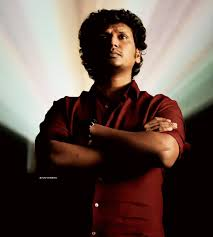

|  | Lokesh Kanagaraj (/loʊkeɪʃ kənəkərɑːdʒ/; born 14 March 1986) is an Indian film director and screenwriter who works in Tamil films. He started his career with a short film in the 2016 anthology Aviyal. He later directed his first feature film Maanagaram (2017). He created the Lokesh Cinematic Universe franchise with his films Kaithi (2019) and Vikram (2022). His upcoming film, Leo,[2] marks his second collaboration with Vijay after Master (2021). |
| year | films |
|---|---|
| 2017 | managaram |
| 2019 | kaithi |
| 2021 | Master |
| 2022 | vikram |
| managgaraam | ❤❤❤❤❤ |
| kaithi | ❤❤❤❤❤ |
| master | ❤❤❤❤❤ |
| vikram | ❤❤❤❤❤ |